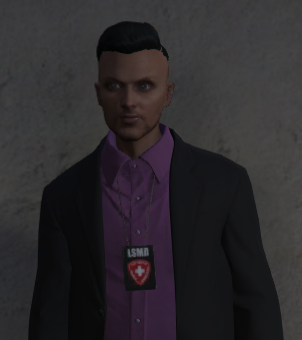
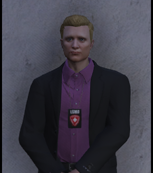
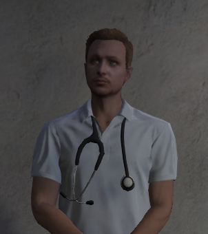
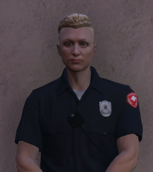
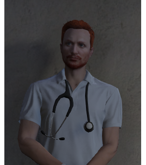
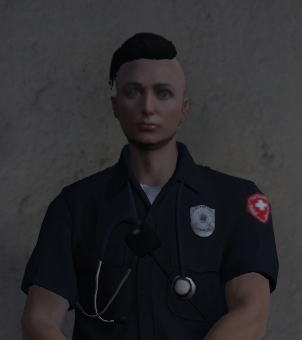
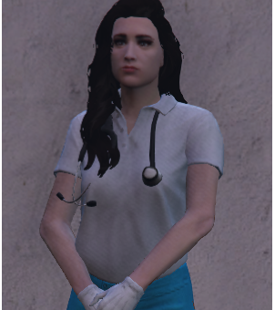
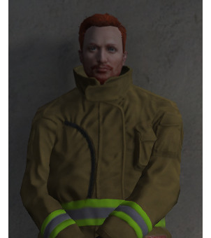

Das LSMD hat sich zur Aufgabe gemacht, medizinischen Notfällen aller Art durch den Einsatz von qualifiziertem Rettungspersonal, den geeigneten Rettungsmitteln und Ärzten rasch und sachgerecht, zu jeder Zeit, zu helfen und Leben zu retten bzw. Leid zu lindern.
Wie sind wir aufgebaut?
Die zwei Bereiche die für Sie am wichtigsten sind, sind der Rettungsdienst und das Krankenhaus.
Der Rettungsdienst übernimmt alle präklinischen und lebensrettenden Maßnahmen und sorgt für einen nahtlosen Übergang ins Krankenhaus. Außerdem ist der Rettungsdienst für all Ihre Anliegen auf der Straße und bei Ihnen Zuhause zuständig.
Das Krankenhaus übernimmt alle Behandlungen, nach dem Einliefern durch den Rettungsdienst. Außerdem ist es Aufgabe des Krankenhauses sich um die Weiterbehandlung und Pflege der Patienten zu kümmern, und um die Patienten, welche mit ihren Anliegen selbst ins Krankenhaus kommen.
Was können wir für Sie tun?
Durch unsere umfangreiche Ausbildung in vielen Bereichen können wir Ihnen in all Ihren medizinischen Belangen helfen und tun unser Bestes und Möglichstes, um das Leben von Ihnen und Ihren Angehörigen zu schützen.
Unser Personal wird ständig weitergebildet und ist immer auf dem neuesten medizinischen Stand. Wir versichern Außerdem, dass Sie immer mit zuverlässigem und fachgerechtem Personal zu tun haben.
Was können Sie tun?
Um Sich und Ihre Angehörigen am besten schützen zu können bieten wir Ihnen das Konzept eines Erste-Hilfe-Kurses (kurz EHK) an.
Mit dem EHK sind Sie in der Lage, in einer Gefahrensituation einem Menschen das Leben du retten.
Während des EHK werden Sie in den Grundlagen der Ersten-Hilfe und, am wichtigsten, der Wiederbelebung ausgebildet. Somit sind Sie in der Lage, sollte es die Situation erfordern, das richtige zu tun und den Patienten bis zur Weiterversorgung durch das Rettungspersonal am Leben zu halten.
Desweiteren sind Sie auch ohne den EHK verpflichtet Hilfe zu leisten. Dies ist in §2 Abs.3 StGB festgehalten und wird geahndet.
Was dürfen wir und was nicht?
Alle Mediziner unterliegen der Medizinischen Verordnung: hier klicken
An wen können Sie sich wenden?
Bei Fragen und Anliegen, können Sie sich gerne postalischen an unser Postfach wenden oder Sie kommen auf unsere Leitung persönlich zu. Wir nehmen Ihre Anliegen gerne entgegen und ernst.
Prof. Dr. Frank Costello, Driector of LSMD
Prof. Dr. Ethan McGee, Assisstant Director of LSMD
Dr. Robert Kreuzler, Abteilungsleiter Ausbildung
David Bakers, Abteilungsleiter Logistik
Dr. Jason McCallum, Abteilungsleiter Kommunikation
Dr. Olaf Brunner, Abteilungsleiter Personal
Amanda Schwung, Abteilungsleiterin Krankenhaus
Dr. Connor McCallum, Abteilungsleiter Feuerwehr
Das ist das restliche Team des LSMD. (Einige fehlen leider auch da)
Bei Fragen oder Anregungen, schreiben Sie uns eine E-Mail an:
lsmd.info.phoenixrp@gmail.com